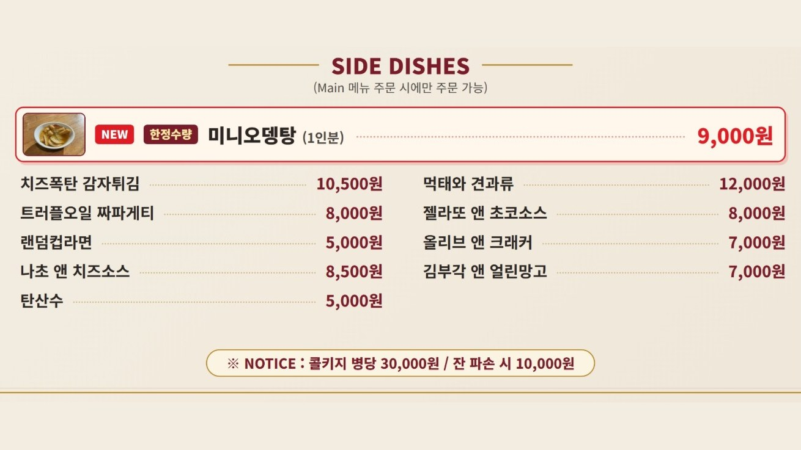

을지로 오뎅바 찾으신다면, 미니오뎅탕 있는 행2PM8PM
을지로에서 따끈한 오뎅탕에 한잔할 곳을 찾으신다면, 을지로3가역 근처 행2PM8PM에 미니오뎅탕(1인분 9,000원)이 새로 나왔습니다. 오뎅만 파는 오뎅바는 아니고 매일 라이브 공연을 하는 와인바라서, 오뎅탕 국물에 소주 · 생맥주 · 와인 · 하이볼을 곁들이며 공연까지 보실 수 있습니다. 미니오뎅탕은 한정수량 사이드 메뉴라 메인 메뉴와 함께 주문하실 수 있습니다.
- 미니오뎅탕 1인분 9,000원
- NEW · 한정수량
- 소주 · 생맥주 · 와인
- 매일 라이브 공연
- 을지로3가역 도보 8분

미니오뎅탕, 이렇게 주문하세요
| 메뉴 | 미니오뎅탕 (1인분) |
|---|---|
| 가격 | 9,000원 |
| 구분 | NEW · 한정수량 — 준비한 양이 다 나가면 일찍 마감될 수 있습니다 |
| 주문 조건 | 사이드 메뉴라 메인 메뉴 주문 시에만 주문 가능 |
| 영업시간 | 일~금 17:00–23:00 · 토 16:00–24:00 · 365일 연중무휴 |
미니오뎅탕 수량은 날마다 다를 수 있으니 꼭 드시고 싶으면 방문 전 010-5364-6915로 물어봐 주세요.
오뎅탕과 같이 고르기 좋은 메인 메뉴
| 오리한판 몽둥이고기 | 23,000원 · 대표 메뉴, 누적 5만 개 판매 |
|---|---|
| 행플레이터 (치즈+하몽+과일) | 24,500원 |
| 모듬만두플레이터 | 18,500원 |
| 이탈리아 라자냐 파스타 | 18,000원 |
| 구운치즈 (까망베르+견과류) | 18,500원 |
| 버팔로윙봉과 나초 | 17,500원 |
| 스모어딥 | 16,500원 |
2인 추천 SET(몽둥이고기+행플레이터)는 2,000원, 3~4인 SET(몽둥이고기+라자냐+행플레이터)는 3,000원 할인됩니다.
오뎅탕에 곁들일 한잔
| 소주 (참이슬 후레쉬) | 8,000원 · 맥주 주문 시에만 가능 |
|---|---|
| 버드와이저 생맥주 | 1잔 8,000원 · 1700cc 피처 31,000원 · 2600cc 피처 49,000원 |
| 무제한 생맥주 | 인당 17,000원 · 1시간 30분 · 오후 6시 전만 가능 |
| 병맥주 (호가든 · 스텔라 · 코로나) | 각 10,000원 · 맥주바틀 세트 5+1 50,000원 |
| 하우스와인 | 1잔 10,000원 · 바틀 44,000원 |
| 시그니처 칵테일 (행하이볼 · 와인에이드) | 각 11,000원 |
| 논알콜 맥주 | 9,000원 |
오뎅바 대신 여기를 고르시는 이유
- 매일 라이브 공연365일 저녁마다 외국 재즈 보컬과 인디 뮤지션이 공연합니다. 관람료는 없습니다.
- 추운 날에도 따뜻하게2층 공연장과 난방 에어컨 · 담요를 갖춘 3층 루프탑 실내에서 오뎅탕 국물과 함께 드실 수 있습니다.
- 2차 · 3차로 딱을지로 골뱅이골목 · 만선호프 거리와 가까워 저녁 자리 뒤에 넘어오시기 좋습니다.
- 단체도 됩니다10명부터 착석 최대 145명, 대관료 · 최소주문금액 0원으로 층 단독 사용이 가능합니다.
- 찾아오기 쉬움서울 중구 수표로12길 10 · 2·3호선 을지로3가역 도보 약 8분, 충무로역 · 종로3가역에서도 걸어오실 수 있습니다.
- 주차도보 3분 마른내길 노상공영주차장 · 월~금 19시 이후, 토 15시 이후, 일요일 · 공휴일 무료입니다.
자주 묻는 질문
을지로에 오뎅탕 먹을 수 있는 술집이 있나요?
을지로3가역 도보 약 8분 거리의 행2PM8PM에 미니오뎅탕(1인분 9,000원)이 있습니다. 소주, 생맥주, 와인, 하이볼과 함께 드실 수 있고 매일 라이브 공연도 열립니다.
미니오뎅탕 가격이 얼마인가요?
1인분 9,000원입니다. 새로 나온 한정수량 메뉴라 준비한 양이 다 나가면 일찍 마감될 수 있습니다.
오뎅탕만 따로 주문할 수 있나요?
미니오뎅탕은 사이드 메뉴라 메인 메뉴를 주문하실 때 함께 주문하실 수 있습니다. 2인이면 몽둥이고기와 행플레이터를 묶은 2인 추천 SET가 단품보다 2,000원 저렴합니다.
행2PM8PM은 오뎅바인가요?
오뎅 전문점은 아니고, 1~3층 통건물에서 매일 라이브 공연을 하는 을지로 와인바입니다. 오뎅탕 같은 따뜻한 국물 안주와 함께 와인 · 소주 · 맥주를 즐기실 수 있습니다.
소주도 파나요?
참이슬 후레쉬를 8,000원에 드립니다. 메뉴판 기준으로 소주는 맥주를 함께 주문하실 때 주문하실 수 있습니다.
몇 시에 문을 여나요?
일~금요일은 17:00부터 23:00까지, 토요일은 16:00부터 24:00까지 영업하고 365일 쉬는 날이 없습니다.
여럿이 가도 앉을 자리가 있나요?
1층 20석, 2층 75석, 3층 50석으로 착석 최대 145명까지 앉으실 수 있습니다. 10명 이상이면 대관료 0원으로 층 단독 대관도 가능하니 010-5364-6915로 문의해 주세요.
어떻게 찾아가나요?
서울 중구 수표로12길 10, 1~3층입니다. 지하철 2·3호선 을지로3가역에서 도보 약 8분이고 충무로역, 종로3가역에서도 걸어오실 수 있습니다.